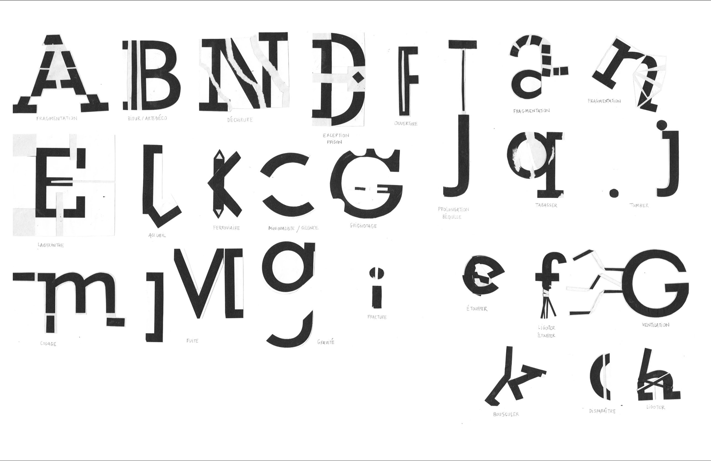
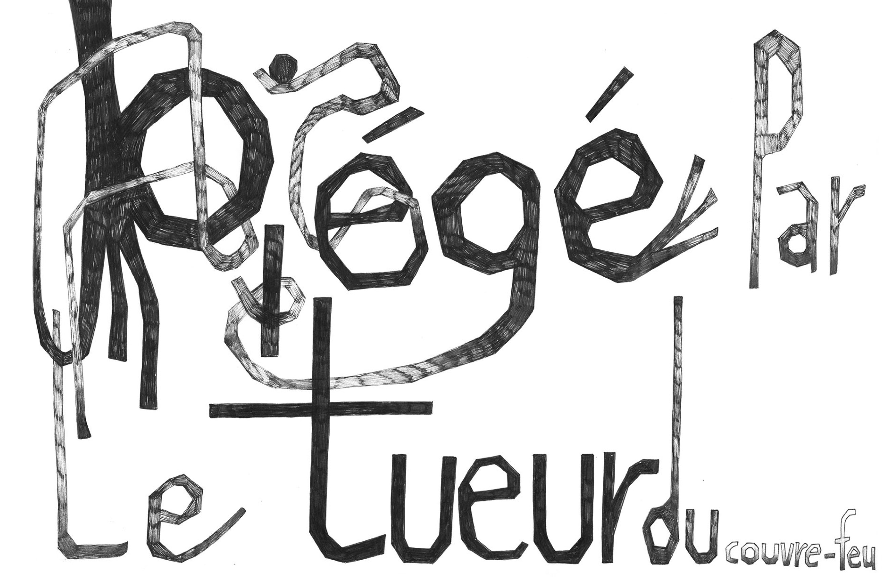

Faits divers
Lettrage
Technique : Découpage, Collage
Format : 29,7 × 42 cm
Exploration plastique des lettres à travers le découpage et l'assemblage de formes associées au vocabulaire des faits divers. Création d’un lettrage expressif autour du titre « Piégé par le tueur du couvre-feu », jouant sur les formes anguleuses et les lignes qui s'entrêmelent pour évoquer la tension et l’enfermement.

